개발 환경 구성과 첫 Python 프로그램
노트북을 처음 열면 코드와 결과가 같은 화면에 있습니다. 인사말을 직접 바꿔 보고, 셀에 쓴 내용과 커널이 기억하는 값이 언제 달라지는지 확인해 봅시다.
수업 노트북
실행을 확인한 커널은 Python 3.12.15입니다.
첫 줄을 실행해 보기
커널은 셀의 파이썬 코드를 실행하는 프로그램입니다. 코드 셀을 선택하고 Shift+Enter를 누르면 그 아래에 결과가 나타납니다. 첫 줄의 괄호 안에 적힌 문장을 읽고 실행하세요.
수업 PC에서 첫 노트북 열기

각 화면에서 ‘① 파일 목록’와 ‘③ 첫 셀과 출력’에 표시되는 내용을 비교하세요.
노트북을 열고 커널을 고른 뒤 셀을 실행하면 그 아래에 출력이 생깁니다.
수업용 JupyterLab을 열고 왼쪽 파일 목록의 업로드 버튼(↑)에서 내려받은 chapter01.ipynb를 고르세요. 파일 이름을 두 번 누릅니다.
커널 선택 창이 뜨면 수업용 Python 커널을 고르세요. 오른쪽 위에 커널 이름이 보입니다.
print("안녕하세요, Python!")를 클릭하고 Shift+Enter를 누르세요. 바로 아래에 안녕하세요, Python!이 나타납니다.
화면 구성은 JupyterLab을 기준으로 그린 예입니다. 수업 PC에 실행 주소나 커널이 준비되지 않았다면 강사에게 수업용 접속 위치를 확인하세요.
셀 01 · 첫 인사
따옴표 사이에 적힌 문장 중 어디까지 화면에 나올까요?
코드 셀은 실행할 내용을 적는 칸입니다. 먼저 아래 줄을 한 번 클릭하고 Shift+Enter를 누르세요. 셀 아래에 ‘안녕하세요, Python!’이 나오면 이 노트북에서 첫 실행을 마친 것입니다.
print("안녕하세요, Python!")실행 결과
안녕하세요, Python!
따옴표는 글의 시작과 끝을 알려 주는 기호입니다. 화면에는 ‘안녕하세요, Python!’만 나타납니다.
셀 02 · 계산해서 표시하기
같은 print에 이번에는 따옴표 없이 식을 넣습니다.
print(3 + 4)실행 결과
7
7이 나옵니다. 커널이 먼저 3과 4를 더한 다음 계산 결과를 print에 건넸습니다.
과제 03 · 문자와 계산 구분하기
3 + 4라는 글자 자체를 한 줄로 표시하세요. 사이의 공백도 남깁니다.
# print 안에 표시할 글자를 넣으세요.풀이와 실행 결과 보기
print("3 + 4")실행 결과
3 + 4
따옴표 안에 있는 더하기 기호는 글자의 일부로 남습니다.
이름을 바꿨는데 옛 이름이 나올 때
코드를 고쳐도 커널 안의 값은 셀을 다시 실행할 때 바뀝니다. 다음 두 셀을 실행하고, 첫 셀에서 이름만 바꾼 뒤 둘째 셀을 먼저 실행해 보세요.
이름을 고치면 인사도 바로 바뀔까요?
이름을 고친 뒤 인사 셀부터 실행해 보세요. 그다음 이름 셀을 실행하고 인사를 다시 출력해 보세요.
셀 04 · 이름 하나 기억시키기
오른쪽 값을 learner라는 이름으로 저장합니다.
learner = "학습자"대입만 하면 화면에 글자가 나오지 않습니다. 다음 셀에서 이 이름을 읽습니다.
셀 05 · 저장한 이름으로 인사하기
이름을 저장한 셀을 먼저 실행한 상태에서 실행하세요.
print(f"안녕하세요, {learner}님!")실행 결과
안녕하세요, 학습자님!
‘안녕하세요, 학습자님!’이라는 인사가 나옵니다. 이름을 수정한 뒤에도 옛 이름이 나오면 대입한 셀부터 다시 실행하세요. 커널을 재시작하면 이름 자체를 잊으므로 위에서부터 실행해야 합니다.
내 노트북이 어느 환경에서 도는지 보기
같은 컴퓨터에 파이썬을 여럿 설치할 수 있습니다. 패키지가 설치돼 있는데 노트북에서 찾지 못할 때는 노트북 메뉴에 표시된 커널과 실제 실행 파일을 먼저 맞춰 봅니다. 아래 경로는 각자 다릅니다.
셀 06 · 커널의 파이썬 찾기
실행 파일의 경로를 읽고, 이 커널이 venv 가상환경을 쓰는지 확인합니다.
import sys
from pathlib import Path
print(sys.executable)
print(sys.prefix != sys.base_prefix)실행 결과
/tmp/hk-expanded-kernel/bin/python True
첫 줄은 현재 커널이 쓰는 파이썬의 전체 경로입니다. 실행 파일 이름이 같아도 앞의 폴더가 다르면 다른 환경일 수 있습니다. 둘째 줄의 True는 일반적인 venv 가상환경을 사용한다는 뜻입니다. False이면 기본 파이썬인지, 다른 환경 관리 도구를 쓰는지 커널 선택 메뉴에서 확인하세요.
셀 07 · 설정이 없을 때의 인사말
실제 환경변수를 출력하지 않고 빈 설정을 준비합니다. 공개할 기본 이름을 여기서 정합니다.
settings = {}
print(settings.get("LEARNER_NAME", "학습자"))실행 결과
학습자
비어 있는 설정에서 이름을 찾지 못해서 기본값인 학습자가 나옵니다. 실제 환경에서는 os.getenv로 같은 이름을 읽을 수 있습니다. 개인 키는 노트북 셀이나 출력에 적지 않습니다.
과제 08 · 친구가 다시 실행할 수 있는 안내 쓰기
안내 한 줄에 먼저 실행할 셀과 기대하는 첫 출력을 적고 출력하세요.
# 친구에게 줄 안내 한 줄을 작성하세요.풀이와 실행 결과 보기
print("첫 인사 셀을 실행하면 안녕하세요, Python!이 나옵니다.")실행 결과
첫 인사 셀을 실행하면 안녕하세요, Python!이 나옵니다.
친구가 커널을 새로 시작해도 어디서 실행하고 무엇과 대조할지 알 수 있습니다. 변경을 Git에 기록할 때는 이런 안내와 코드가 함께 들어가는지 확인합니다.
첫 커밋에서 실제로 저장한 파일
Git은 선택한 파일의 내용과 변경 설명을 커밋에 남깁니다. 아래 제공 셀은 임시 폴더에 연습 저장소를 만들고 첫 인사 셀의 실행 안내를 기록합니다. 현재 프로젝트와 개인 Git 설정은 건드리지 않습니다. 강의용 컴퓨터에서 Git이 준비되어 있으면 그대로 실행하세요.
셀 09 · 첫 커밋 읽어 보기
저장소 만들기(init), 기록할 파일 고르기(add), 기록 남기기(commit)를 거친 뒤 방금 남긴 변경 설명을 읽습니다.
제공 코드 전체 보기
import shutil
import subprocess
from tempfile import TemporaryDirectory
if shutil.which("git"):
with TemporaryDirectory() as folder:
def git(*args):
return subprocess.run(["git", "-C", folder, *args], check=True,
capture_output=True, text=True).stdout.strip()
git("init", "-q")
(Path(folder) / "README.md").write_text("첫 인사 셀을 실행하세요.", encoding="utf-8")
git("add", "README.md")
git("-c", "user.name=Student", "-c", "user.email=student@example.invalid",
"-c", "commit.gpgsign=false", "commit", "-qm", "첫 인사 실행 안내")
print(git("log", "-1", "--format=%s"))
else:
print("Git이 설치된 수업 환경에서 첫 커밋을 확인하세요.")실행 결과
첫 인사 실행 안내
Git을 사용할 수 있는 환경에서는 첫 인사 실행 안내가 나옵니다. 방금 본 문장은 커밋에 붙인 설명입니다. 같은 셀을 다시 실행하면 새 임시 저장소에서 한 번 더 연습합니다.
다시 풀어 보기
커널을 재시작하고 첫 줄부터 실행해 보세요. 첫 인사, 숫자 7, 이름을 넣은 인사가 다시 보이면 노트북에 남은 옛 출력을 읽은 것과 직접 재현한 결과를 구분할 수 있습니다.
관련 개념 더 읽기
Windows·WSL과 macOS 준비
학생 실습의 기본 경로는 Windows + WSL Ubuntu입니다. WSL은 Windows에서 Linux 환경을 사용할 수 있게 해 줍니다. 이미 준비된 교육용 PC라면 설치를 반복하지 말고 버전과 실행 위치부터 확인하세요.
개인 Windows PC에서 WSL을 새로 설치할 때는 이 장 끝의 Microsoft · WSL 설치 안내를 사용하세요. 기관 PC에서 설치 권한이 없으면 수업용 Jupyter 접속 위치를 확인하세요. macOS에서는 준비된 Jupyter 환경을 바로 엽니다.
프로젝트마다 가상환경 만들기
프로젝트마다 필요한 도구의 버전은 다를 수 있습니다. 가상환경은 프로젝트가 사용할 Python 패키지를 분리하는 공간입니다. 운영체제 전체를 새로 만드는 가상 머신과는 다릅니다.
설정값을 코드에서 분리하기
프로그램의 동작은 같아도 사용자 이름 같은 설정은 바뀔 수 있습니다. 코드에 직접 적는 대신 .env 파일에 값을 두면 설정과 동작을 구분할 수 있습니다. 오늘은 실제 비밀키를 사용하지 않고 연습용 이름만 저장합니다.
변경을 기록하고 첫 커밋 만들기
Git은 프로젝트의 변경 이력을 기록하는 도구입니다. 커밋은 선택한 변경을 설명과 함께 기록하는 단위입니다. 로컬 커밋만으로 인터넷에 공개되는 것은 아닙니다. 오늘은 GitHub 업로드 없이 내 컴퓨터에서 첫 기록을 만듭니다.
복습과 다음 장 연결
오늘은 코드를 어디에 저장하고 어떻게 실행하는지 익혔습니다. 다음 장에서는 변수와 자료형을 배워 이름·숫자·참과 거짓을 직접 다룹니다. 오늘 작성한 print와 설정값 예제가 그 출발점이 됩니다.